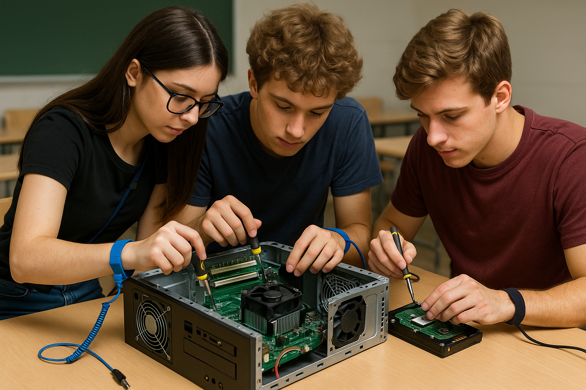
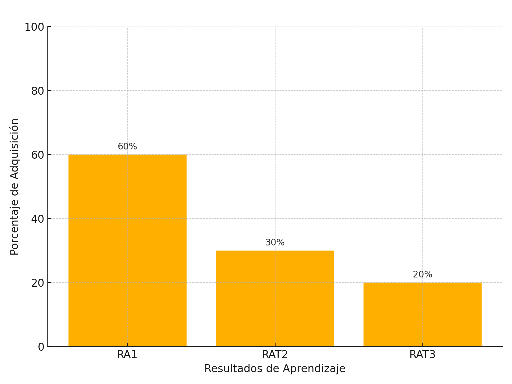

Unidad Didáctica 1: Arquitectura y Hardware¶

🎯 ¿Qué vas a aprender?¶
Vas a conocer la arquitectura de un ordenador, sus componentes físicos y lógicos, y aprenderás a identificar, manipular y diagnosticar sistemas informáticos, aplicando criterios de seguridad y sostenibilidad.
📏 ¿Cómo se evalúa?¶
A través de actividades prácticas, diagnósticos simulados, cuadernos de trabajo, informes de práctica, test y autoevaluaciones. Se valorará tu participación, actitud, iniciativa, trabajo en equipo y la calidad de las soluciones propuestas.
🔎 ¿Qué haremos?¶
Desmontarás ordenadores reales o simulados, analizarás su arquitectura, diagnosticarás averías y desarrollarás un proyecto personal: "Construye tu PC ideal".
✅ Resultados de aprendizaje¶
- RA1. Evalúa sistemas informáticos identificando sus componentes.
- RAT2. Desarrolla aprendizaje autónomo.
- RAT3. Aplica principios de sostenibilidad tecnológica.
📊 Criterios de evaluación¶
- 1.a, 1.b, 1.c, 1.d
- rat2.a, rat2.b
- rat3.a, rat3.b
⏱ Temporalización¶
⏱️ Duración: 44 horas – Primer trimestre
🧩 Bloque: Fundamentos de sistemas informáticos
📦 Secuencia: UT1/6
📅 Tabla de planificación por actividad¶
| Tipo de actividad | Nombre de la actividad | Criterios de evaluación utilizados | Temporalización (horas) |
|---|---|---|---|
| Motivación | Presentación de la unidad | 1.a, rat2.a | 1 |
| Práctica guiada | Desmontando un PC | 1.a, 1.c, rat3.a | 3 |
| Debate | Tecnología y sostenibilidad | rat3.a, rat3.b | 2 |
| Diagnóstico inicial | Cuestionario y creación de portafolio | 1.a, rat2.a, rat2.b | 2 |
| Exposición guiada | Arquitectura, buses, memoria | 1.a, 1.b | 5 |
| Práctica técnica | Identificación y montaje de componentes | 1.a, 1.c | 5 |
| Diagnóstico técnico | Fallos frecuentes | 1.b, 1.d | 4 |
| Investigación | Consulta de manuales y comparación en PCPartPicker | rat2.b | 2 |
| Simulación | PC Building Simulator + Cuaderno de tareas | 1.a, 1.b, rat2.b | 4 |
| Proyecto final | Diseña tu PC ideal | 1.a, 1.c, rat2.a, rat3.a, rat3.b | 10 |
| Evaluación final | Test + diagnóstico práctico + defensa del proyecto | 1.a, 1.b, 1.c, rat2.a, rat3.a | 6 |
¶
1. Introducción¶
La informática parte del conocimiento profundo de sus sistemas base. Esta unidad sienta los cimientos del resto del módulo, explorando desde los componentes de hardware hasta las normas de seguridad y uso responsable de recursos.
2. Objetivos didácticos¶
- Comprender la arquitectura básica de un ordenador.
- Identificar los componentes de un sistema informático.
- Diagnosticar y resolver averías comunes.
- Aplicar criterios de seguridad en la manipulación de hardware.
- Utilizar herramientas de monitorización.
- Fomentar la sostenibilidad mediante el uso racional del hardware.
3. Contenidos¶
- Arquitectura de ordenadores
- Sistemas microinformáticos
- Componentes físicos: placas, CPU, RAM, almacenamiento, buses
- Periféricos y adaptadores
- Puesta en marcha, chequeo, diagnóstico y reparación
- Herramientas de diagnóstico y monitorización
- Representación de la información
- Seguridad laboral y prevención
- Impacto ambiental y reutilización
4. Actividades y secuenciación¶
Fase 1: Introducción y motivación (Sesiones 1 a 4)¶
🧪 Sesión 1: Presentación de la unidad y objetivos¶
- Actividad: Presenta el módulo y la unidad 1 utilizando una presentación visual alternativa en formato digital accesible desde los dispositivos del alumnado. Se realiza una lluvia de ideas sobre qué conocen de los ordenadores. Introduciremos los RA y los criterios que se evaluarán mediante un esquema compartido. Finalizaremos con una actividad interactiva tipo "Mentimeter" sobre componentes.
- Material: Guía del alumno, dispositivos móviles o portátiles, resumen RA/CE en PDF.
- Criterios de evaluación trabajados: 1.a, rat2.a
- Evaluación: Observación directa sobre la participación, actitud ante la actividad inicial y recogida de impresiones previas mediante el resultado del test interactivo.
🔧 Sesión 2: Dinámica “Desmontando un PC”¶
- Actividad: Los estudiantes, en grupos de 3-4, desmontan un equipo real o simulado. Cada uno asume un rol: coordinador, técnico, documentador y portavoz. Identifican cada componente con una etiqueta adhesiva y lo describen en una tabla. Se utilizan guías impresas con esquemas y funciones de cada componente.
- Material: Torre de PC, kits de herramienta, pulseras antiestáticas, guías visuales impresas, fichas de roles, etiquetas autoadhesivas.
- Criterios de evaluación trabajados: 1.a, 1.c, rat3.a
- Evaluación: Lista de control del docente + rúbrica breve de grupo para valorar organización, comunicación y precisión en la identificación de componentes.
🌱 Sesión 3: Debate – Tecnología y sostenibilidad¶
- Actividad: Visionado de un vídeo sobre el impacto ambiental del hardware. A continuación, los grupos debaten sobre qué decisiones pueden tomarse para mejorar la sostenibilidad desde el rol técnico. Cada grupo plasma sus conclusiones en una cartulina o herramienta colaborativa digital. Finalmente, cada portavoz presenta una medida concreta al resto de la clase.
- Material: Vídeo introductorio, guía de debate, herramienta colaborativa digital (ej. Padlet, Jamboard).
- Criterios de evaluación trabajados: rat3.a, rat3.b
- Evaluación: Escala actitudinal para medir respeto, escucha activa y argumentación + rúbrica para la presentación de propuestas sostenibles.
📝 Sesión 4: Cuestionario diagnóstico + portafolio¶
- Actividad: El alumnado realiza un cuestionario inicial para detectar conocimientos previos sobre hardware, componentes y sostenibilidad. Posteriormente, el docente les explica el portafolio individual de aprendizaje y les entrega una plantilla digital editable. Comienzan a completarla con una ficha de autoevaluación inicial y sus objetivos personales.
- Material: Cuestionario en Google Forms, plantilla de portafolio en formato editable, rúbrica de autoevaluación inicial.
- Criterios de evaluación trabajados: 1.a, rat2.a, rat2.b
- Evaluación: Corrección automática o en clase del cuestionario, revisión del portafolio y ficha de autoevaluación, orientación individual por parte del docente.
Fase 2: Desarrollo (Sesiones 5 a 18)¶
- Presentaciones interactivas: arquitectura, buses, memoria
- Prácticas con hardware real/simulado: identificación de componentes
- Actividades de diagnóstico de fallos frecuentes
- Lectura técnica: manuales de fabricantes, PCPartPicker
- Simulación: "PC Building Simulator" + Cuaderno de tareas
Fase 3: Aplicación (Sesiones 19 a 26)¶
- Proyecto: "Diseña tu PC ideal para un entorno profesional concreto"
- Práctica: uso de herramientas como HWMonitor, CPU-Z
- Evaluación final teórico-práctica (test + diagnóstico + defensa del proyecto)
5. Instrumentos de evaluación¶
- Observación directa (actitud, participación, roles en grupo)
- Cuestionarios tipo test (inicial y final)
- Prácticas técnicas en aula
- Informe técnico de diagnóstico
- Cuaderno de trabajo / portafolio digital
- Autoevaluación y coevaluación por rúbrica
- Presentación y defensa del proyecto
📋 Rúbrica: Proyecto “Construye tu PC ideal”¶
| Criterio | Excelente (9-10) | Notable (7-8) | Aprobado (5-6) | Insuficiente (1-4) |
|---|---|---|---|---|
| Justificación técnica de componentes | Argumenta con precisión técnica y contexto | Argumenta correctamente con algún fallo menor | Justifica parcialmente o con poca profundidad | Sin coherencia técnica |
| Sostenibilidad y eficiencia | Plantea soluciones con bajo impacto y alta eficiencia | Aplica algunas medidas sostenibles | Muestra cierta conciencia ecológica | Ignora criterios ambientales |
| Presentación del informe | Excelente estructura, claridad y lenguaje técnico | Bien organizado y claro | Comprensible pero mejorable | Desorganizado, confuso |
| Defensa oral | Expone con seguridad y responde con precisión | Buena exposición con alguna duda | Defiende el proyecto de forma básica | No consigue explicar ni defender |
6. Recursos y materiales¶
- Componentes reales (RAM, placas, discos)
- Herramientas (multímetro, destornilladores)
- Software: CPU-Z, HWMonitor, CrystalDiskInfo
- Simuladores: PC Building Simulator, PC Virtual Lab
- Realidad virtual (Meta Quest) si está disponible
- Webs de consulta: Wikipedia, Intel, PCPartPicker, fabricantes